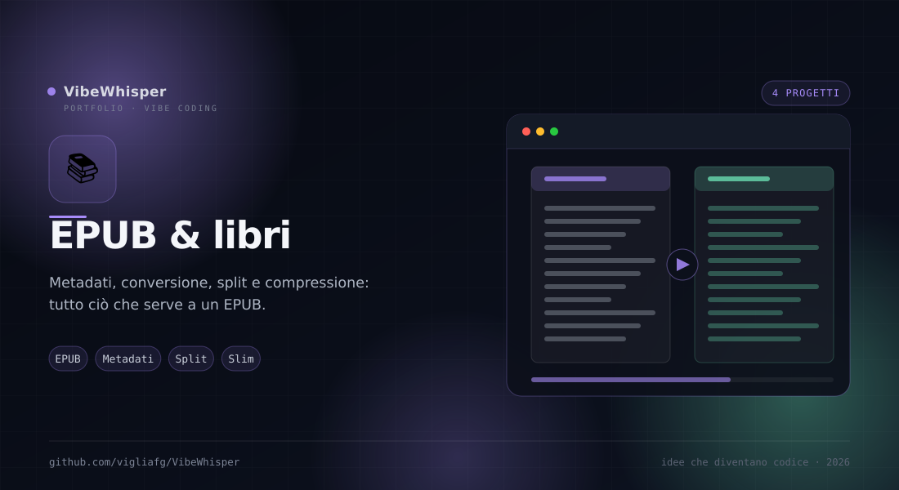

📚
EPUB & libri
Metadati, conversione, estrazione capitoli e compressione: i progetti che lavorano sul libro digitale, prima e dopo la lettura.
4
Progetti
2
Strumenti EPUB
1
Conversione EPUB→sito
0
Upload
Sezione 02 · Libri
La filiera del libro digitale
Arricchire i metadati, trasformare un EPUB in un sito, estrarre un capitolo o alleggerire le immagini: ogni progetto interviene in un punto preciso del ciclo di vita di un ebook.
Come sono collegati
Fili comuni
I due strumenti di Noesis EPUB Tools condividono lo stesso repository e la stessa interfaccia; gli altri due lavorano a monte e a valle.
- IBS Metadata Scraper — Arricchisce i metadati del libro prima della conversione o della pubblicazione.
- epub2site — Trasforma l'EPUB in un sito statico leggibile ovunque, con reader e TOC.
- Noesis EPUB Tools — epubsplitter ed epubslimer sono i due strumenti della suite: estrazione capitoli e compressione immagini.